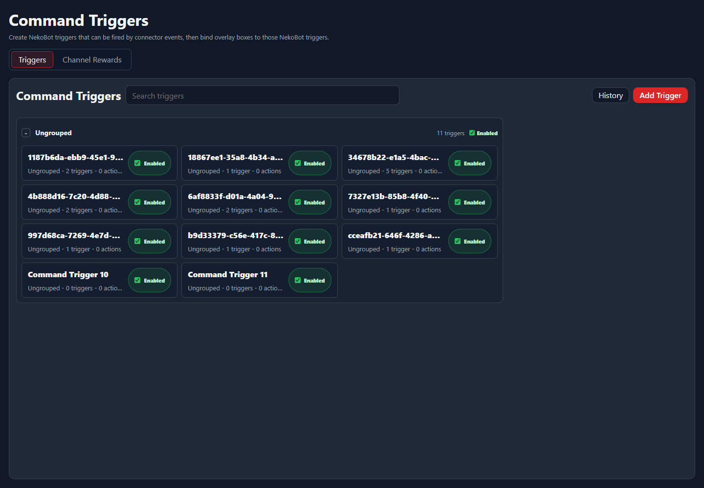

Setup Page
Command Triggers
Command Triggers are NekoBot-owned trigger definitions that can be fired by connector events and then used by overlay boxes or action flows.
Trigger List

The list groups saved triggers, shows whether they are enabled, and gives quick access to history and creation.
ControlWhat it does
Search triggersFilters the trigger list by name, group, or details.HistoryOpens recent trigger activity so you can debug why something did or did not fire.Add TriggerCreates a new NekoBot trigger definition.EnabledShows whether the saved trigger can currently run.Trigger Editor
The editor is where a trigger gets its name, grouping, enable state, cooldowns, connector event bindings, and optional action behavior.
AreaUse it for
Trigger InfoName, group, enabled state, and basic trigger identity.CooldownsGlobal, per-user, and role-based timing limits.TriggersConnector events or local events that should fire this NekoBot trigger.ActionsWork NekoBot should run when this trigger fires.Actions And Overlay Binding
Command Triggers can be used directly by action flows, or selected from overlay box trigger controls when a visual result should appear on stream.
- Use connector events to decide when a trigger fires.
- Use cooldowns to protect chat commands and reward flows from spam.
- Use overlay boxes to show text, media, TTS, wheel pickers, or layered sources when the trigger fires.
- Use Channel Rewards when the trigger should be tied to Twitch or Kick reward setup.